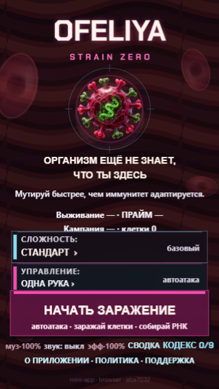
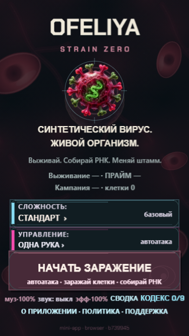
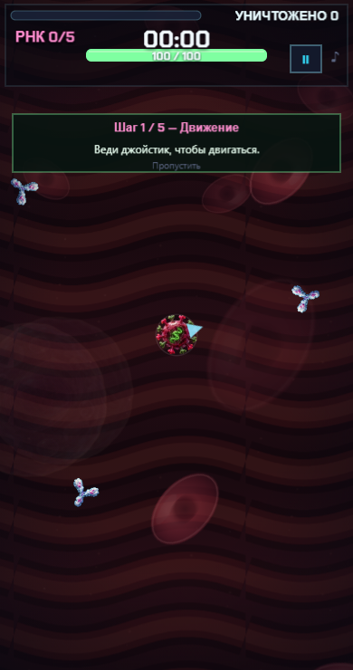
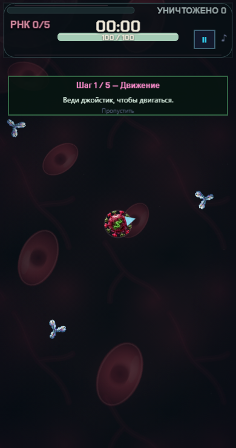
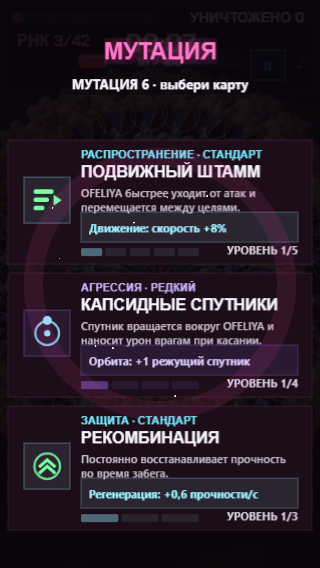
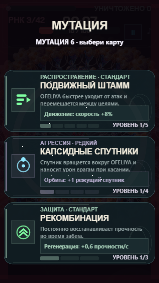
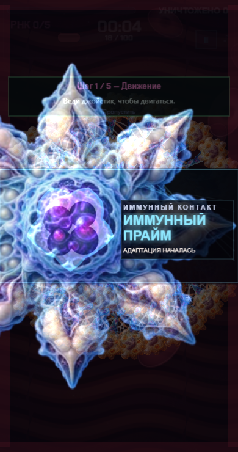
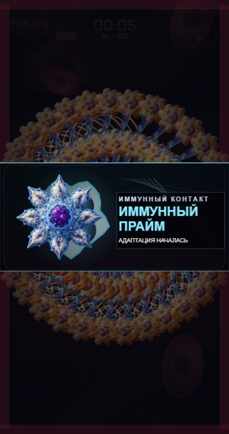
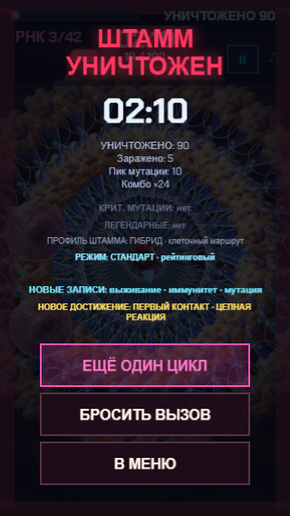
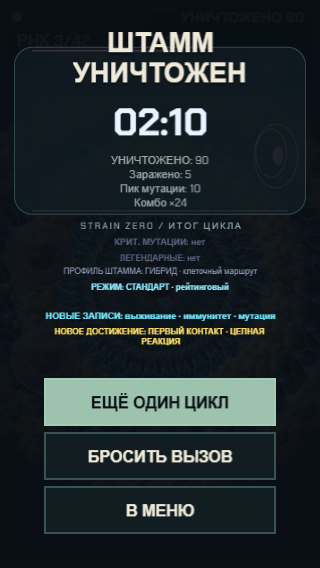

Слева main aba70324; справа кандидат b739945. Production QA, одинаковые размеры viewport и сценарии. Отдельные снимки фиксируют оформление, а не длительность движения. Положение декоративных объектов между экранными сценариями может различаться; плотная матрица отдельно фиксирует одинаковый pose/seed.










Три альтернативных направления — концепты · Измерения и ограничения · Независимое сравнение